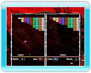

14
Versus
Puedes jugar con dos tipos de reglas diferentes.
Regla: Destruir todo
El primer jugador que consiga romper todos los bloques de la pantalla, gana.
Regla: Destruir color
El primer jugador que consiga romper todos los bloques de un mismo color, gana.

Objetos de ayuda
Puedes complicarle la existencia a tu contrincante al conseguir uno de estos objetos.
S (Sosiego)
Hace que la bola de energía de tu contrincante vaya mucho más lenta.
I (Incremento)
Crea bloques normales en espacios libres de la pantalla de tu contrincante (de 3 a 5 dependiendo del nivel de dificultad).
H (Hierro)
Crea bloques duros en espacios libres de la pantalla de tu contrincante (de 3 a 5 dependiendo del nivel de dificultad).
R (Reducción)
Reduce el tamaño de la VAUS de tu contrincante a la mitad.